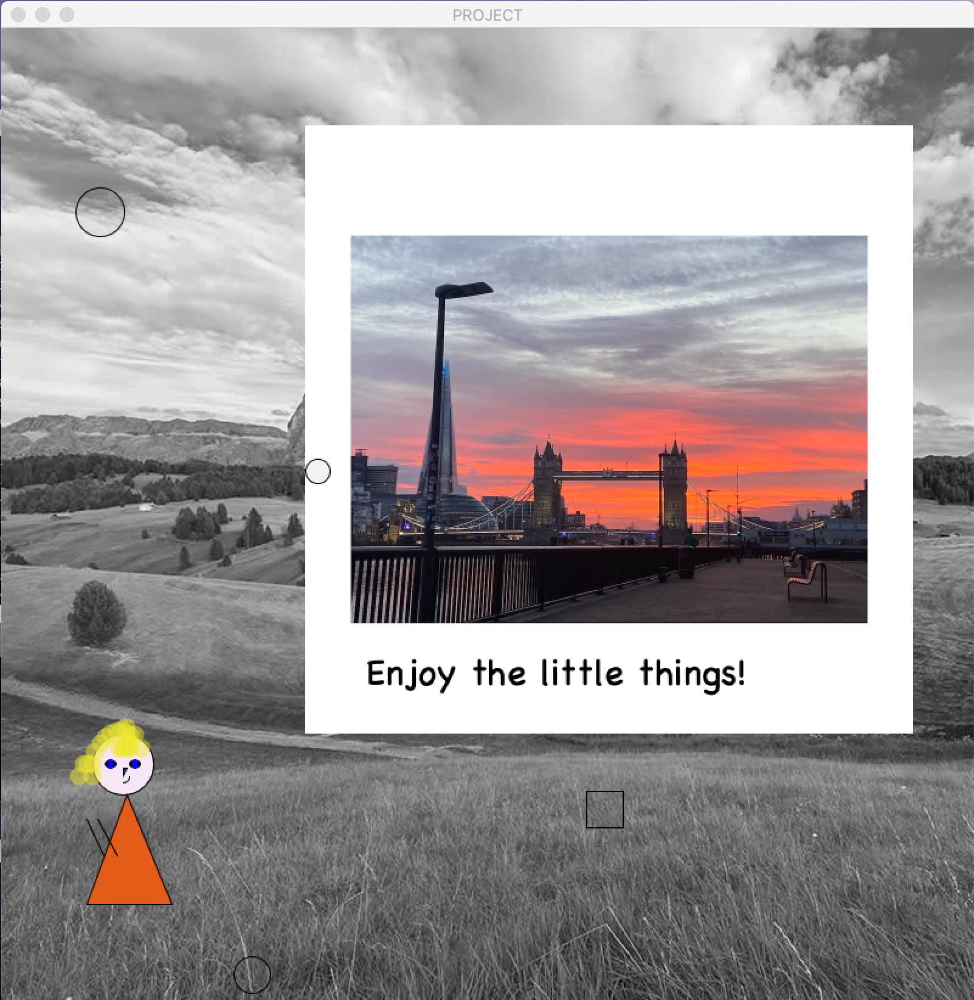

Antonina PuckoHi, I haven't got experience in programming, and I never thought I'm gonna study it at City, cause I wasn't interesed in it at all, my dream was to be a police women. But my life turn upside down and I'm here right now. Happy to be part of City. Apart of studing, I like to |
||
|
|
||
Bootcamp 2020: Little thingsMy first programming project, concluding the 2 week Programming Bootcamp at City (2020). This Processing project demonstrates a comprehensive understanding of randomness.I created a simple project that should inspire, I think, coordinates of each images (e.g. position, colors and size, shape, movement,data ) are stored in parallel 2D arrays. Using processing features I wanted to show you that you have to "Enjoy the little things" like Tower Bridge sunset or like someone is clapping to you cause you did a good job(like that little girls on the left). Check out the code on Github: https://github.com/masliakova/adbt210.git | ||
|  | ||